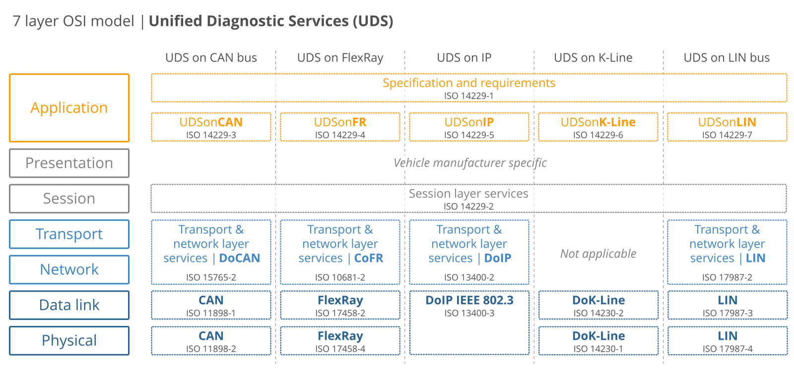

[toc]
flowchart TB
OBD2-->LIN
OBD2-->K-Line
OBD2-->CAN
subgraph .
direction TB
14229["14229-1
UDS"]
14229-->14229-4[14229-4]
14229-->14229-5[14229-5]
14229-->14229-6[14229-6]
14229-->14229-7[14229-7]
14229-->14229-3[14229-3]
end
14229-3-->CAN
14229-4-->FR
14229-5-->IP
14229-6--->K-Line
14229-7-->LIN
CANopen-->CAN
J939-->CAN
flowchart TB
direction LR
subgraph LIN协会
direction LR
1999["1999
LIN 1.0"]-->2000
2000["2000
LIN 1.1
LIN 1.2"]-->2002
2002["2002
LIN 1.3"]-->2003
2003["2003
LIN 2.0 (widely used)
adding major changes"]-->2006
2006["2006
LIN 2.1"]-->2010
2010["2010
LIN 2.2A"]-->2010-12
2010-12["2010-12
SAE J2602
based on LIN 2.0"]
end
subgraph ISO
direction LR
2016["2016
ISO 17987:2016"]
end
LIN协会-->ISO
瑞萨官方LIN入门中文资料(resources已备份)
LIN通常连接几个小功能，然后作为CAN总线的一个结点
协议
| 协议 | 标准 |
|---|---|
| 应用层 | ISO 11987-1、ISO111987-5 |
| 表示层 | ISO 11987-5 |
| 会话层 | ISO 11987-3 |
| 传输层 | ISO 11987-2 |
| 网络层 | ISO 11987-2 |
| 链路层 | ISO 11987-3、ISO 11987-6 |
| 物理层 | ISO 11987-4、ISO 11987-7 |
flowchart TB
subgraph CAN
direction LR
1986["1986
CAN"]-->1991
1991["1991
CAN 2.0"]-->1993
1993["1993
ISO 11898"]-->2003["2003
分成链路层和物理层"]
end
subgraph CANFD[CAN FD]
direction LR
2015["2015
CAN FD"]-->2016["2016
提速到5Mbts"]
end
subgraph Future[Next Generation]
direction LR
2018["2018
CAN XL"]
end
CAN-->CANFD
CANFD-->Future
功能：数据通信的基本方式
协议
| 协议 | 标准 |
|---|---|
| 链路层 | ISO 11898-1 |
| 物理层 | ISO 11898-2 |
功能：基于CAN的通信协议，工业用的多，比如工业机器人
协议
| 协议 | 标准 |
|---|---|
| 表示层 | CiA 303-2 |
| 会话层 | CiA 303-1 |
flowchart LR
subgraph Before
direction TB
1994["1994
J1939-11, J1939-21, J1939-31
First docs were released"]-->2000_1
2000_1["2000
The initial top level document was published"]-->2000_2
2000_2["2000
CAN included"]-->2001
2001["2001
J1939 starts replacing former standards SAE J1708/J1587"]
end
subgraph Now
direction TB
2002["2002
J1939 increasing dominant in heavy-duty"]-->2021
2021["2021
J1939-22"]
end
Before-->Now
功能：重型车通过CAN总线通信的方式
协议
| 协议 | 标准 |
|---|---|
| J1939物理层 | 基于J1939-11/15 |
| J1939数据链路层 | 基于J1939-21 |
| J1939网络层 | 基于J1939-31 |
| J1939应用层 | 基于J1939-71 |
| J1939网络管理 | 基于J1939-81 |
| J1939诊断 | 基于J1939-13/73 |
flowchart TB
ALDL[ALDL - 非标准化的第一代OBD-I系统]-->M-OBD
M-OBD[M-OBD - 丰田汽车推出的一代非标准化OBD系统]-->OBD-I
OBD-I-->OBD-1.5
OBD-1.5-->OBD2
功能：面向排放系统ECU的诊断协议
协议：https://blog.csdn.net/weixin_38451800/article/details/122567551
| 协议 | 标准 |
|---|---|
| KWP2000 | ISO14230-4、ISO9141-2 |
| PWM | SAEJ1850 |
| VPM | SAEJ1850 |
| CAN-BUS | ISO15765-4 |
